PLUSMODIA E-LATIH
Kuasai kemahiran mengenalpasti malaria,
bila-bila masa, di mana sahaja!
Dapatkan sijil kompetensi di hujung jari anda.
01 • TENTANG KAMI
Unit Parasitologi merupakan unit yang terlibat dalam pemeriksaan dan pengesanan parasit, termasuk pemeriksaan malaria.
Platform e-latih ini dibangunkan bagi membantu meningkatkan pengetahuan dan kemahiran dalam pengenalpastian malaria.
02 • PEMBELAJARAN
Pengenalpastian spesies Plasmodium melalui pemeriksaan mikroskopik.
Lihat Modul →Penilaian, kawalan kualiti dan pengukuhan kemahiran pemeriksaan.
Lihat Modul →03 • PENILAIAN
Uji pengetahuan anda selepas melengkapkan modul pembelajaran.
Mula Latihan →04 • HUBUNGI